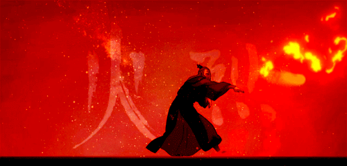

Unique among the bending elements, firebenders are actually capable of creating their element. They are also viewed as more aggressive and dangerous than other benders due to the nature of their element and how they focus their bending. Since fire is a force of destruction and primarily consumes rather than creates, this reputation has followed these benders throughout history from the very beginning of humanity learning to bend the elements.
With their power heavily associated with the sun and the heat within the depths of the earth, the first firebenders were taught to harness their power by studying dragons and how they moved. The first firebender to accomplish this feat and learn from the dragons was Wan who later went on to be the first Avatar. Firebending draws its power from the benders passion and rive to accomplish their goals, this had been corrupted by the Fire Nation to imply that firebending drew its strength from rage and aggression, further harming their reputation, but many sects of firebenders kept the knowledge of the true nature of firebending to pass on the tradition to newer generations. Firebenders temporarily lose their ability to bend the element during a solar eclipse but their strength is subtly boosted during the summer and gains a great advantage when a Sozin's Comet, named for the fire lord who used this enhanced strength to conquer an destroy the air nomads, passes close by the planet. Some subdivisions of firebending include combustionbending, a highly focused and explosive form, and the ability to both generate and redirect lightning.

Wan was the first firebender, and coincidentally the first avatar, to learn firebending from the dragons themselves and to receive the gift of firebending directly from the great lion
turtles. He went on to become the first avatar, after acidentally releasing the spirit of darkness from its ancient conflict with the spirit of light, by bonding with the spirit of light to
protect the balance in the world.
Szeto was fundamental in creating the Fire Nation as it is known in the current age. Forgoing the possibility of becoming the leader, Szeto work as an adviser to help cement
the authority of the Fire Lord and bring his control over nearly the entire population of firebenders.
Roku was the avatar directly before Aang, and while nothing overly notable occured during his lifetime his life had repercussions for another century after his death. Roku's
friendship with the current Fire Lord, Sozin, led to him being to lenient on Sozin as he developed imperialistic notions and ultimately led to the Hundred Year War that Aang was forced
to deal with uring his tenure as avatar.